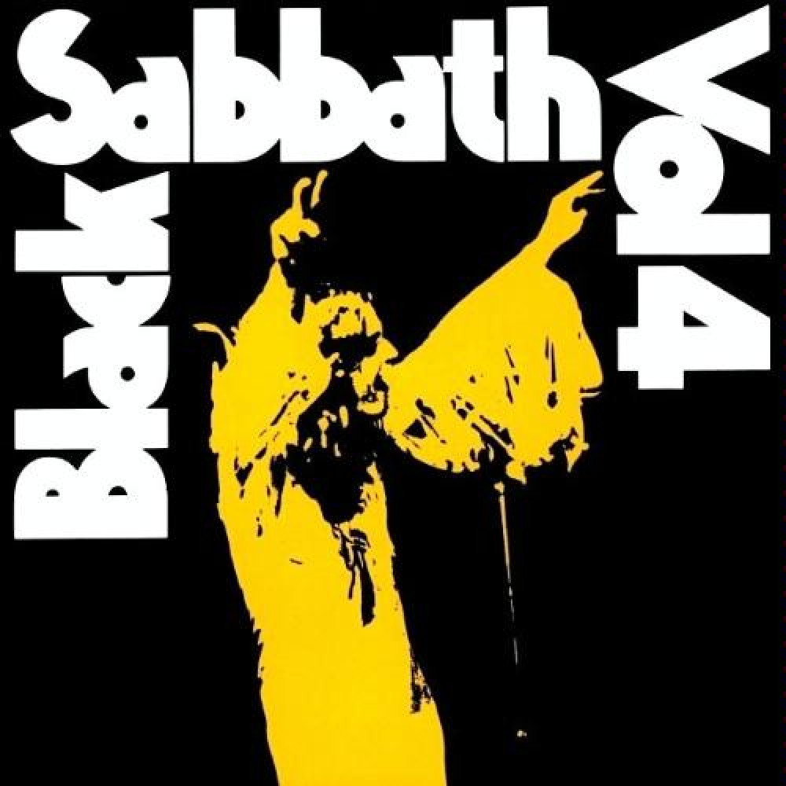
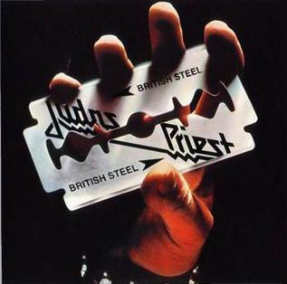
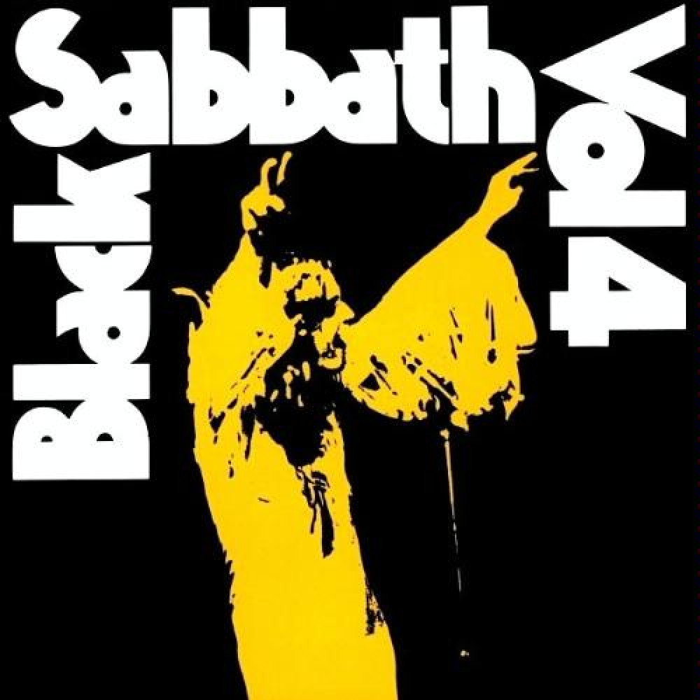
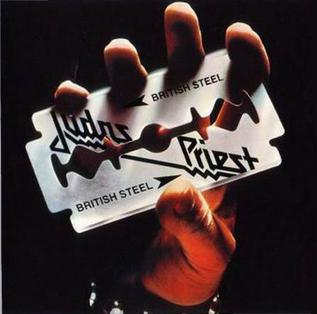
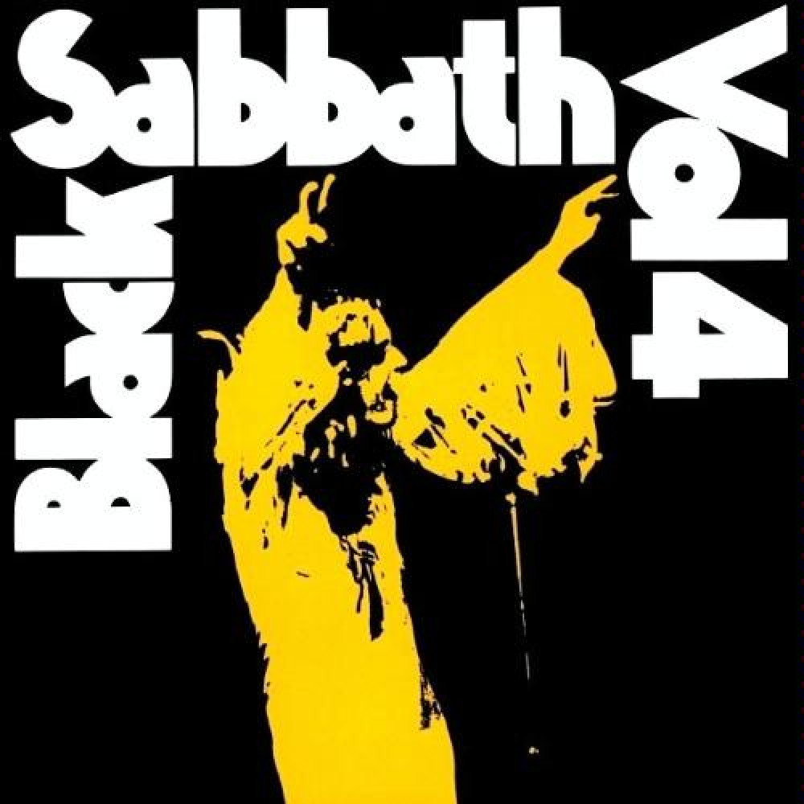
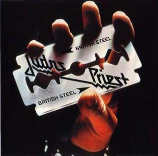

Oh, yeah
Some people say my love cannot be true
Please believe me, my love, and I'll show you
I will give you those things you thought unreal
The sun, the moon, the stars, all bear my seal
Oh, yeah
Follow me now and you will not regret
Leaving the life you led before we met
You are the first to have this love of mine
Forever with me till the end of time
Your love for me has just got to be real
Before you know the way I'm going to feel
I'm going to feel
I'm going to feel
Oh, yeah
Now, I have you with me under my power
Our love grows stronger now with every hour
Look into my eyes, you'll see who I am
My name is Lucifer, please take my hand
Oh, yeah
Follow me now and you will not regret
Leaving the life you led before we met
You are the first to have this love of mine
Forever with me till the end of time
Your love for me has just got to be real
Before you know the way I'm going to feel
I'm going to feel
I'm going to feel
Oh, yeah
Now I have you with me under my power
Our love grows stronger now with every hour
Look into my eyes, you'll see who I am
My name is Lucifer, please take my hand
Has he lost his mind?
Can he see or is he blind?
Can he walk at all
Or if he moves, will he fall?
Is he alive or dead?
Has he thoughts within his head?
We'll just pass him there
Why should we even care?
He was turned to steel
In the great magnetic field
When he traveled time
For the future of mankind
Nobody wants him
He just stares at the world
Planning his vengeance
That he will soon unfurl
Now the time is here
For Iron Man to spread fear
Vengeance from the grave
Kills the people he once saved
Nobody wants him
They just turn their heads
Nobody helps him
Now he has his revenge
Heavy boots of lead
Fills his victims full of dread
Running as fast as they can
Iron Man lives again
What you get and what you see
Things that don't come easily
Feeling happy in my vein
Icicles within my brain (cocaine)
Something blowing in my head
Winter's ice, it soon will spread
Down to freeze my very soul
Makes me happy, makes me cold
My eyes are blind but I can see
The snowflakes glisten on the trees
The sun no longer sets me free
I feel the snowflakes freezing me
Let the winter sun shine on
Let me feel the frost of dawn
Build my dreams on flakes of snow
Soon I'll feel the chilling glow
Right
Don't you think I know what I'm doing?
Don't tell me that it's doing me wrong
You're the one that's really the loser
This is where I feel I belong (right)
Crystal world with winter flowers
Turn my days to frozen hours
Lying snowblind in the sun
Will my ice age ever come?
There I was completely wasting, out of work and down
All inside it's so frustrating as I drift from town to town
Feel as though nobody cares if I live or die
So I might as well begin to put some action in my life
You know what it's called
Breaking the law, breaking the law
Breaking the law, breaking the law
Breaking the law, breaking the law
Breaking the law, breaking the law
So much for the golden future, I can't even start
I've had every promise broken, there's anger in my heart
You don't know what it's like, you don't have a clue
If you did you'd find yourselves doing the same thing
You doing to me now
Breaking the law, breaking the law
Breaking the law, breaking the law
Breaking the law, breaking the law
Breaking the law, breaking the law
You don't know what it's like
Breaking the law, breaking the law
Breaking the law, breaking the law
Breaking the law, breaking the law
Breaking the law, breaking the law
Breaking the law, breaking the law
Breaking the law, breaking the law
Breaking the law, breaking the law
Breaking the law, breaking the law
Faster than a bullet
Terrifying scream
Enraged and full of anger
He is half man and half machine
Rides the metal monster
Breathing smoke and fire
Closing in with vengeance soaring high
He is the Painkiller
This is the Painkiller
Planets devastated
Mankind's on its knees
A savior comes from out the skies
In answer to their pleas
Through boiling clouds of thunder
Blasting bolts of steel
Evils going under deadly wheels
He is the Painkiller
This is the Painkiller
Faster then a laser bullet
Louder than an atom bomb
Chromium plated boiling metal
Brighter than a thousand suns
Flying high on rapture
Stronger free and brave
Nevermore encaptured
They've been brought back from the grave
With mankind resurrected
Forever to survive
Returns from Armageddon to the skies
He is the Painkiller
This is the Painkiller
Wings of steel Painkiller
Deadly wheels Painkiller
Ah
He is the Painkiller (killer)
This is the Painkiller (killer)
He is the Painkiller (killer)
This is the Painkiller (killer)
Pain, pain, killer, killer
Pain, pain, killer, killer
Can't stop the Painkiller
Pain (pain)
One life, I'm gonna live it up
I'm takin' flight, I said, I'll never get enough
Stand tall, I'm young and kinda proud
I'm on the top as long as the music's loud
If you think I'll sit around as the world goes by
You're thinkin' like a fool 'cause it's a case of do or die
Out there is a fortune waitin' to be had
You think I'll let it go you're mad
You've got another thing comin'
You've got another thing comin'
That's right, here's where the talkin' ends
Well, listen this night there'll be some action spent
Drive hard, I'm callin' all the shots
I got an ace card comin' down on the rocks
If you think I'll sit around while you chip away my brain
Listen, I ain't foolin' and you'd better think again
Out there is a fortune waitin' to be had
You think I'll let it go you're mad
You got another thing comin'
You've got another thing comin'
You've got another thing comin'
In this world we're livin' in, we have our share of sorrow
Answer now is don't give in aim for a new tomorrow
Oh, so hot no time to take a rest, yeah
Act tough, ain't room for second best
Real strong, got me some security
Hey, I'm a big smash, I'm goin' for infinity, yeah
If you think, I'll sit around as the world goes by
You're thinkin' like a fool 'cause it's a case of do or die
Out there is a fortune waitin' to be had
You think I'll let it go you're mad
You've got another thing comin'
You've got another thing comin'
You've got another thing comin'
You've got another thing Comin', yeah
You've got another thing comin'
You've got another thing comin'
You've got another thing comin'
I am a man who walks alone
And when I'm walking a dark road
At night or strolling through the park
When the light begins to change
I sometimes feel a little strange
A little anxious when it's dark
Fear of the dark
Fear of the dark
have a constant fear that something's always near
Fear of the dark
Fear of the dark
I have a phobia that someone's always there
Have you run your fingers down the wall
And have you felt your neck skin crawl
When you're searching for the light?
Sometimes when you're scared to take a look
At the corner of the room
You've sensed that something's watching you
Fear of the dark
Fear of the dark
I have a constant fear that something's always near
Fear of the dark
Fear of the dark
Have a phobia that someone's always there
Have you ever been alone at night
Thought you heard footsteps behind
And turned around and no one's there?
And as you quicken up your pace
You find it hard to look again
Because you're sure there's someone there
Fear of the dark Fear of the dark
I have a constant fear that something's always near
Fear of the dark
Fear of the dark
have a phobia that someone's always there
Fear of the dark
Fear of the dark
Fear of the dark
Fear of the dark
Fear of the dark
Fear of the dark
Fear of the dark
Fear of the dark
Watching horror films the night before
Debating witches and folklore
The unknown troubles on your mind
Maybe your mind is playing tricks
You sense and suddenly eyes fix
On dancing shadows from behind
Fear of the dark
Fear of the dark
I have a constant fear that something's always near
Fear of the dark
Fear of the dark
Have a phobia that someone's always there
Fear of the dark
Fear of the dark
I have a constant fear that something's always near
Fear of the dark
Fear of the dark
Have a phobia that someone's always there
When I'm walking a dark road
I am a man who walks alone
You'll take my life, but I'll take yours too
You'll fire your musket, but I'll run you through
So when you're waiting for the next attack
You'd better stand, there's no turning back
The bugle sounds, the charge begins
But on this battlefield, no one wins
The smell of acrid smoke and horses' breath
As I plunge on into certain death
The horse, he sweats with fear, we break to run
The mighty roar of the Russian guns
And as we race towards the human wall
The screams of pain as my comrades fall
We hurdle bodies that lay on the ground
And the Russians fire another round
We get so near, yet so far away
We won't live to fight another day
We get so close, near enough to fight
When a Russian gets me in his sights
He pulls the trigger and I feel the blow
A burst of rounds take my horse below
And as I lay there gazing at the sky
My body's numb and my throat is dry
And as I lay forgotten and alone
Without a tear, I draw my parting groan
Woe to you, oh earth and sea
For the Devil sends the beast with wrath
Because he knows the time is short
Let him who hath understanding reckon the number of the beast
For it is a human number
Its number is six hundred and sixty-six
I left alone, my mind was blank
I needed time to think
To get the memories from my mind
What did I see? Can I believe?
That what I saw that night was real and not just fantasy?
Just what I saw in my old dreams
Were they reflections of my warped mind staring back at me?
'Cause in my dreams it's always there
The evil face that twists my mind and brings me to despair
Night was black, was no use holding back
'Cause I just had to see, was someone watching me?
In the mist, dark figures move and twist
Was all this for real or just some kind of Hell?
Six six six, the number of the beast
Hell and fire was spawned to be released
Torches blazed and sacred chants were praised
As they start to cry, hands held to the sky
In the night, the fires are burning bright
The ritual has begun, Satan's work is done
Six six six, the number of the beast
Sacrifice is going on tonight
This can't go on, I must inform the law
Can this still be real, or just some crazy dream?
But I feel drawn towards the chanting hordes
Seem to mesmerize, can't avoid their eyes
Six six six, the number of the beast
Six six six, the one for you and me
I'm coming back, I will return
And I'll possess your body and I'll make you burn
I have the fire, I have the force
I have the power to make my evil take its course

